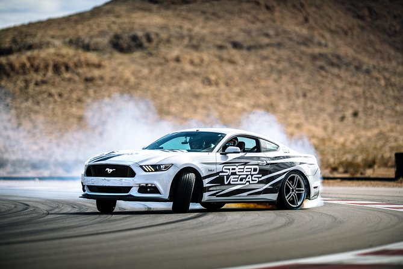
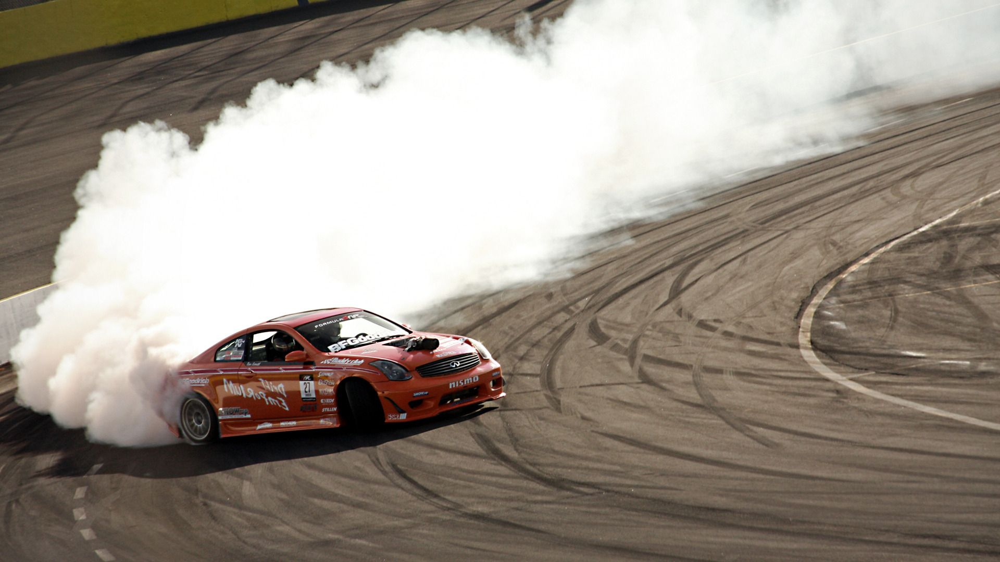

drift auto's worden niet op die manier in de winkel gekocht meestal zijn de echte drift auto's helemaal verandert dus veel lichter en ander stuur of andere schakel bak alles om de auto zo snel mogelijk en zo oed mogelijk te laten gelijden op de achter banden. het makkelijkst om te driften is met een auto die achterwiel aangedreven is en gelukkig zijn de auto's met de betere moteren achterwiel aangedreven. dirften ziet er vaak erg leuk en mooi uit maar het is niet zo goed voor de banden want die raken snel versleten. daardoor is het grip minder dus erg gevaarlijk.

driften is eigelijk een autorijtechniek waarmee de bestuurder met opzet de auto in overstuur probeert te brengen. dit gebeurt zelfs wel is als bij mensen als ze het echt niet proberen bijvoorbeeld als het heel erg sneeuwt want dan gelijdt de auto. vaak komt er ook veel rook van de banden daarom is het slecht voor de banden. driften komt eigelijk oorsponkelijk uit azie vooral japan. daar is ook een erg bekende film gemaakt namelijk: fast and forious Tokyo drift. een ding dat je vaak bij drift aut's ziet is dat ze erg veel dingen hebben die niet nodig zijn bv een spoiler of erg veel stickers.